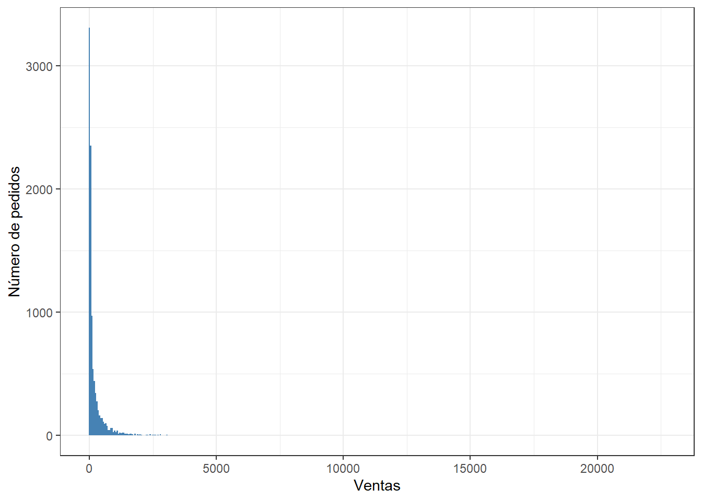
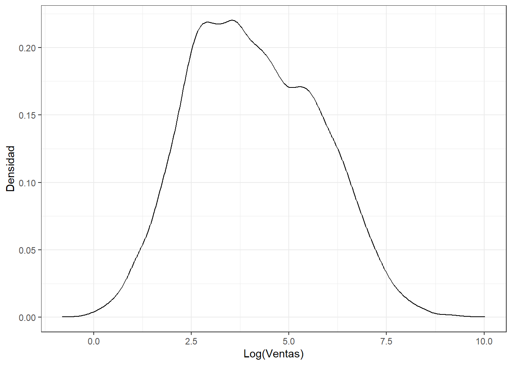
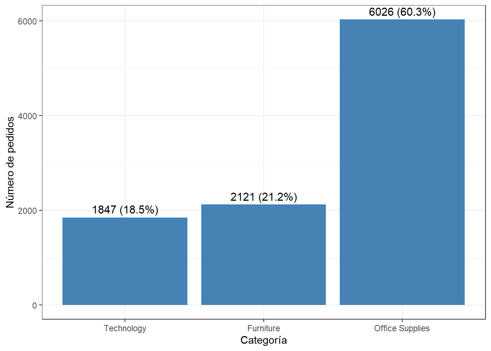
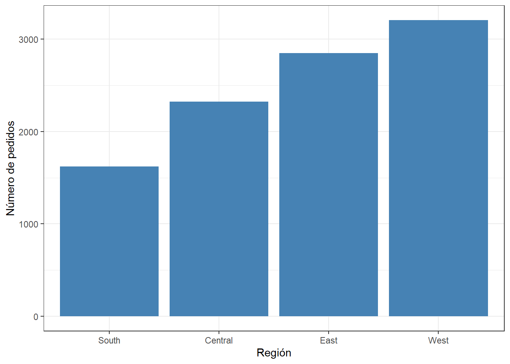

Chapter 4 Análisis univariado
4.1 Resumen estadístico de Sales
df %>%
summarise(
n = length(Sales),
media = mean(Sales),
ds = sd(Sales),
mediana = median(Sales),
q1 = quantile(Sales)[2],
q3 = quantile(Sales)[4],
RIC = IQR(Sales),
minimo = min(Sales),
maximo = max(Sales)
) -> resumen_Sales
print(resumen_Sales)## # A tibble: 1 × 9
## n media ds mediana q1 q3 RIC minimo maximo
## <int> <dbl> <dbl> <dbl> <dbl> <dbl> <dbl> <dbl> <dbl>
## 1 9994 230. 623. 54.5 17.3 210. 193. 0.444 22638.La media (230) es 4 veces la mediana (54.5) y la desviación estándar (623) supera a la media, lo que confirma una fuerte asimetría positiva: la mayoría de los pedidos son de bajo valor y unos pocos pedidos muy grandes (hasta 22638) jalan el promedio hacia arriba. El RIC de 193 (entre Q1=17.3 y Q3=210) muestra que el 50% central de los pedidos se mueve en un rango moderado.
4.2 Histograma de Sales
df %>%
ggplot(mapping = aes(x = Sales)) +
geom_histogram(binwidth = 50, fill = "steelblue") +
labs(x = "Ventas", y = "Número de pedidos") +
theme_bw()
Confirma visualmente el sesgo a la derecha: la gran mayoría de las barras se concentran en valores bajos de venta, con una cola larga y dispersa hacia la derecha.
4.3 Densidad de log(Sales)
df %>%
ggplot(aes(log(Sales))) +
geom_density() +
labs(x = "Log(Ventas)", y = "Densidad") +
theme_bw()
Al aplicar el logaritmo, la distribución se vuelve más simétrica y manejable. La mayor concentración de observaciones se encuentra aproximadamente entre log(Sales) = 2.7 y 3.7, donde la densidad alcanza un máximo cercano a 0.24. Posteriormente, la densidad disminuye progresivamente a medida que aumentan los valores de log(Sales), mostrando una menor concentración de ventas altas.
4.4 Barras: pedidos por categoría
df %>%
count(Category) %>%
mutate(porcentaje = (n / sum(n)) * 100) %>%
ggplot(mapping = aes(x = reorder(Category, n), y = n)) +
geom_col(fill = "steelblue") +
geom_text(aes(label = paste0(n, " (", round(porcentaje, 1), "%)")), vjust = -0.5, size = 4) +
labs(x = "Categoría", y = "Número de pedidos") +
theme_bw()
Office Supplies concentra el 60.3% de los pedidos (6026), muy por encima de Furniture (21.2%, 2121) y Technology (18.5%, 1847). Es decir, Office Supplies es la categoría que más rota en número de pedidos.
4.5 Barras: pedidos por región
df %>%
count(Region) %>%
ggplot(aes(x = reorder(Region, n), y = n)) +
geom_col(fill = "steelblue") +
labs(x = "Región", y = "Número de pedidos") +
theme_bw()
## # A tibble: 4 × 3
## Region n pct
## <chr> <int> <dbl>
## 1 Central 2323 23.2
## 2 East 2848 28.5
## 3 South 1620 16.2
## 4 West 3203 32.0West tiene mayor numero de pedidos, con 3203 pedidos, seguida de East con 2848
Central tiene 2323 y y South con la cantidad mas baja, con 1620
West tiene mayor numero de pedidos con 3203 pedidos, seguida de East con 2848.
Central con 2323 y South con menor numero de pedidos con 1620.